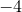

The following table provides a brief description of the function of each of the parameters in the settings section of the above configuration file, with a list of possible values for each:
ASPECT |
Possible values: Any floating-point number. Analogous set command: set size ratio Sets the aspect ratio of plots. |
AUTOASPECT |
Possible values: ON / OFF Analogous set command: set size ratio Sets whether plots have the automatic aspect ratio, which is the golden ratio. If ON, then the above setting is ignored. |
AXESCOLOUR |
Possible values: Any recognised colour. Analogous set command: set axescolour Sets the colour of axis lines and ticks. |
BACKUP |
Possible values: ON / OFF Analogous set command: set backup When this switch is set to ‘ON’, and plot output is being directed to file, attempts to write output over existing files cause a copy of the existing file to be preserved, with a tilde after its old filename (see Section 4.10). |
BAR |
Possible values: Any floating-point number. Analogous set command: set bar Sets the horizontal length of the lines drawn at the end of errorbars, in units of their default length. |
BINORIGIN |
Possible values: Any floating-point number Analogous set command: set binorigin Sets the point along the |
BINWIDTH |
Possible values: Any floating-point number Analogous set command: set binwidth Sets the widths of the bins used by the histogram command. |
BOXFROM |
Possible values: Any floating-point number. Analogous set command: set boxfrom Sets the horizontal point from which bars on bar charts appear to emanate. |
BOXWIDTH |
Possible values: Any floating-point number. Analogous set command: set boxwidth Sets the default width of boxes on barcharts. If negative, then the boxes have automatically selected widths, so that the interfaces between bars occur at the horizontal midpoints between the specified datapoints. |
COLOUR |
Possible values: ON / OFF Analogous set command: set terminal Sets whether output should be colour (ON) or monochrome (OFF). |
DATASTYLE |
Possible values: Any plot style. Analogous set command: set data style Sets the plot style used by default when plotting data files. |
DISPLAY |
Possible values: ON / OFF Analogous set command: set display When set to ‘ON’, no output is produced until the set display command is issued. This is useful for speeding up scripts which produce large multiplots; see Section 5.3.5 for more details. |
DPI |
Possible values: Any floating-point number. Analogous set command: set dpi Sets the sampling quality used, in dots per inch, when output is sent to a bitmapped terminal (the jpeg/gif/png terminals). |
ENLARGE |
Possible values: ON / OFF Analogous set command: set terminal When set to ‘ON’ output is enlarged or shrunk to fit the current paper size. |
FONTSIZE |
Possible values: Integers in the range . Analogous set command: set fontsize Sets the fontsize of text, varying between LaTeX’s tiny () and Huge (5). |
FUNCSTYLE |
Possible values: Any plot style. Analogous set command: set function style Sets the plot style used by default when plotting functions. |
GRID |
Possible values: ON / OFF Analogous set command: set grid Sets whether a grid should be displayed on plots. |
GRIDAXISX |
Possible values: Any integer. Analogous set command: None Sets the default |
GRIDAXISY |
Possible values: Any integer. Analogous set command: None Sets the default |
GRIDMAJCOLOUR |
Possible values: Any recognised colour. Analogous set command: set gridmajcolour Sets the colour of major grid lines. |
GRIDMINCOLOUR |
Possible values: Any recognised colour. Analogous set command: set gridmincolour Sets the colour of minor grid lines. |
KEY |
Possible values: ON / OFF Analogous set command: set key Sets whether a legend is displayed on plots. |
KEYCOLUMNS |
Possible values: Any integer . Analogous set command: set keycolumns Sets the number of columns into which the legends of plots should be divided. |
KEYPOS |
Possible values: ‘TOP RIGHT’, ‘TOP MIDDLE’, ‘TOP LEFT’, ‘MIDDLE RIGHT’, ‘MIDDLE MIDDLE’, ‘MIDDLE LEFT’, ‘BOTTOM RIGHT’, ‘BOTTOM MIDDLE’, ‘BOTTOM LEFT’, ‘BELOW’, ‘OUTSIDE’. Analogous set command: set key Sets where the legend should appear on plots. |
KEY_XOFF |
Possible values: Any floating-point number. Analogous set command: set key Sets the horizontal offset, in approximate graph-widths, that should be applied to the legend, relative to its default position, as set by KEYPOS. |
KEY_YOFF |
Possible values: Any floating-point number. Analogous set command: set key Sets the vertical offset, in approximate graph-heights, that should be applied to the legend, relative to its default position, as set by KEYPOS. |
LANDSCAPE |
Possible values: ON / OFF Analogous set command: set terminal Sets whether output is in portrait orientation (OFF), or landscape orientation (ON). |
LINEWIDTH |
Possible values: Any floating-point number. Analogous set command: set linewidth Sets the width of lines on plots, as a multiple of the default. |
MULTIPLOT |
Possible values: ON / OFF Analogous set command: set multiplot Sets whether multiplot mode is on or off. |
ORIGINX |
Possible values: Any floating point number. Analogous set command: set origin Sets the horizontal position, in centimetres, of the default origin of plots on the page. Most useful when multiplotting many plots. |
ORIGINY |
Possible values: Any floating point number. Analogous set command: set origin Sets the vertical position, in centimetres, of the default origin of plots on the page. Most useful when multiplotting many plots. |
OUTPUT |
Possible values: Any string. Analogous set command: set output Sets the output filename for plots. If blank, the default filename of pyxplot.foo is used, where ‘foo’ is an extension appropriate for the file format. |
PAPER_HEIGHT |
Possible values: Any floating-point number. Analogous set command: set papersize Sets the height of the papersize for postscript output in millimetres. |
PAPER_NAME |
Possible values: A string matching any of the papersizes listed in Table 3.1. Analogous set command: set papersize Sets the papersize for postscript output to one of the pre-defined papersizes listed in Table 3.1. |
PAPER_WIDTH |
Possible values: Any floating-point number. Analogous set command: set papersize Sets the width of the papersize for postscript output in millimetres. |
POINTLINEWIDTH |
Possible values: Any floating-point number. Analogous set command: set pointlinewidth Sets the linewidth used to stroke points onto plots, as a multiple of the default. |
POINTSIZE |
Possible values: Any floating-point number. Analogous set command: set pointsize Sets the sizes of points on plots, as a multiple of their normal sizes. |
SAMPLES |
Possible values: Any integer. Analogous set command: set samples Sets the number of samples (datapoints) to be evaluated along the |
TERMANTIALIAS |
Possible values: ON / OFF Analogous set command: set terminal Sets whether jpeg/gif/png output is antialiased, i.e. whether colour boundaries are smoothed to disguise the effects of pixelisation. |
TERMINVERT |
Possible values: ON / OFF Analogous set command: set terminal Sets whether jpeg/gif/png output has normal colours (OFF), or inverted colours (ON). |
TERMTRANSPARENT |
Possible values: ON / OFF Analogous set command: set terminal Sets whether jpeg/gif/png output has transparent background (ON), or solid background (OFF). |
TERMTYPE |
Possible values: X11_singlewindow, X11_multiwindow, X11_persist, PS, EPS, PDF, PNG, JPG, GIF Analogous set command: set terminal Sets whether output is sent to the screen or to disk, and, in the latter case, the format of the output. The ps option should be used for both encapsulated and normal postscript output; these are distinguished using the ENHANCED option, above. |
TEXTCOLOUR |
Possible values: Any recognised colour. Analogous set command: set textcolour Sets the colour of all text output. |
TEXTHALIGN |
Possible values: Left, Centre, Right Analogous set command: set texthalign Sets the horizontal alignment of text labels to their given reference positions. |
TEXTVALIGN |
Possible values: Top, Centre, Bottom Analogous set command: set textvalign Sets the vertical alignment of text labels to their given reference positions. |
TITLE |
Possible values: Any string. Analogous set command: set title Sets the title to appear at the top of the plot. |
TIT_XOFF |
Possible values: Any floating point number. Analogous set command: set title Sets the horizontal offset of the title of the plot from its default central location. |
TIT_YOFF |
Possible values: Any floating point number. Analogous set command: set title Sets the vertical offset of the title of the plot from its default location at the top of the plot. |
WIDTH |
Possible values: Any floating-point number. Analogous set command: set width / set size Sets the width of plots in centimetres. |
 axis from which the bins used by the histogram command originate.
axis from which the bins used by the histogram command originate.  -axis to which gridlines should attach, if the set grid command is called without specifying which axes to use.
-axis to which gridlines should attach, if the set grid command is called without specifying which axes to use.